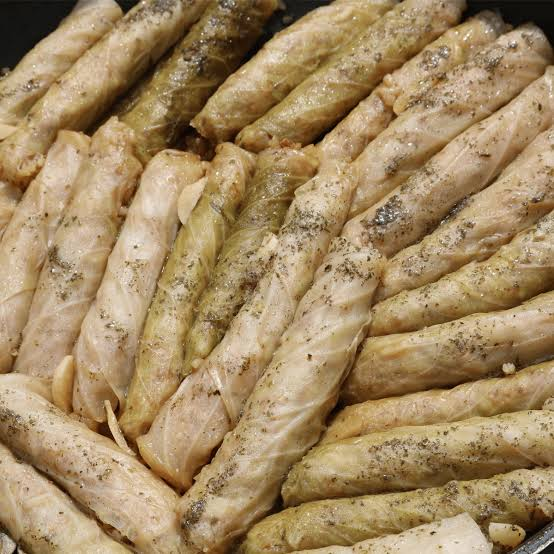

Lebanese Stuffed Cabbage Recipe
Home

Description
Lebanese stuffed cabbage, known as malfouf mahshi,
consists of tender blanched green cabbage leaves rolled
around a seasoned filling of short-grain rice and minced meat,
simmered in a garlicky, lemony, and mint-infused broth.
Ingredients
- Cabbage: 1 large green cabbage
- Filling: short-grain rice, ground beef or lamb(or mix),
olive oil, and Lebanese seven-spice
- Cooking Layer & Broth: Optional lamb chops, bone-in meat, or cabbage ribs
on the bottom of the pot; whole peeled garlic cloves; water; and freshly
squeezed lemon juice
Steps
- Prep the leaves: Core the cabbage, blanch in boiling water for 5–6 minutes,
trim thick stems, and cut large leaves into smaller roll-sized pieces.
- Mix the filling: Combine rinsed short-grain rice, ground meat,
oil, and spices.
- Roll and layer: Place about a tablespoon of filling near the edge and roll
into a thin cigar shape (often leaving ends open). Pack tightly in layers
over meat or stems with garlic cloves.
- Simmer under weight: Weigh the rolls down with a heatproof plate so they
don't unravel. Add water to nearly cover,
bring to a boil, then simmer gently for about 1 to 2 hours until
the rice and cabbage are tender.
- Stir in fresh lemon juice near the end of cooking, rest briefly, and serve warm.
Bon Appetit!